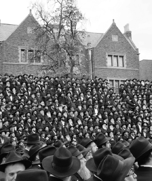

Chassidim of 5774
What is the change in avoda required today of a Chassid that was not expected in the times of the Alter Rebbe? Is the avoda easier or harder today? What does it mean to “welcome Moshiach” or to “live with Moshiach” in our daily avoda? How is this expressed in shlichus, chinuch, shalom bayis etc.? * A new series on the topic of Moshiach and Geula from a contemporary perspective along with tools for daily life

A few months ago, there was an article in the media about a Japanese man, Hiroo Onoda, aged 90 who had been a soldier in World War II. When the war ended in 1945, they forgot to inform him, or better put, they informed him but he did not believe them. He thought it was enemy propaganda. Another 27 years went by, as he remained in the Philippines jungle in his uniform, until he was convinced the war was over when his former commanding officer visited him there!
“Every Japanese soldier was prepared for death, but as an intelligence officer I was ordered to conduct guerrilla warfare and not to die,” he said in an interview. “I became an officer and I received an order. If I could not carry it out, I would feel shame. I am very competitive.”
It sounds funny and also a bit odd that someone would be told a war is over and he would insist on continuing to fight. L’havdil elef alfei havdalos, about 300 years ago, the light of Chassidus began to shine in the world. The first “Rebbe,” R’ Yisroel Baal Shem Tov, the founder of Chassidus, began teaching and guiding the Jewish people in this new way. Hashem sent us a new light and it was a new era. There was a new and upwardly mobile path in avodas Hashem.
Judaism is not only about behaviors but about essence. Someone born to a Jewish mother is Jewish in essence. He is the son of the King of kings and this is the greatest possible privilege. Therefore, his avodas Hashem needs to be with enormous simcha, joy over the great privilege bestowed upon us to come close to the Creator.
Today we mention the Besht’s name with reverence, but he wasn’t always graciously accepted everywhere. There were those who thought that they should continue serving Hashem the way they had until that point, to focus mainly on reward and punishment, the reward serving as the motivator to do mitzvos and the punishment serving as a deterrent from doing aveiros.
When the Alter Rebbe founded Chabad Chassidus and established its agenda as being about the importance of intellectual internalization, learning Chassidus with intellectual understanding, and not just “casting aside the intellect” but taking the intellect and instilling emuna in it, there were those who looked askance at this. That is an avoda for Admurim, for tzaddikim, they said. Chassidim need to learn Chassidus only occasionally; Chassidus is something spiritual and does not have to “come down” into understanding, they thought.
The Alter Rebbe demanded that his Chassidim meditate and attain feelings of love and awe of G-d through their own efforts, while other Chassidim relied on their Admurim for that. They held that it was enough to be in the Rebbe’s presence in order to receive spiritual strength from him and that there was no need for one’s own intellectual, meditative avoda.
Thus, in every generation, there were things added to avodas Hashem, and not everybody managed to “graduate” to the next level and progress with the times.
CELL PHONES – THE SEVENTH GENERATION
We can compare this to the technological world which is advancing at a rapid pace. Not many years ago a cell phone was considered a wonder and having one was considered a luxury; few people bought them. As the years passed and these phones improved and became commonplace, if someone showed up with a first generation cell phone, which just a few years ago was considered a novelty, we would tell him he is not up to date and it’s time to move on (without an Internet connection that is unfiltered, of course).
The same is true in the world of Chassidus. Every generation has its chiddushim. The Chassidim of the Alter Rebbe did not learn in Tomchei T’mimim (which was founded nearly 120 years ago), and today there hardly exists a Chassid who did not learn in Tomchei T’mimim. The Chassidim of the Rebbe Rashab (aside from a few) did not go on shlichus, but in our generation, shlichus is the ambition of every Chabad bachur.
In our generation too, we saw a big change and a “new era,” as the Rebbe defined it at the end of the 80’s and the beginning of the 90’s, as compared to all the years preceding it. Obviously, as successful as we might be in living with the sichos of the early years, if we do not learn, internalize and live with the most recent sichos, especially those of 5751-5752, it would be like someone who uses an old cell phone and is convinced he has a most advanced gadget.
In the following articles we will try and understand what change is required of us in our avoda, what change is demanded today of a Chassid which was not demanded in the time of the Alter Rebbe. Is the avoda today easier or harder? Is the avoda to be a beinoni or a tzaddik? What does it mean when we say “kabbalas p’nei Moshiach Tzidkeinu” or “to live with Moshiach” when it comes to our daily avoda? How is this expressed in shlichus, chinuch, shalom bayis?
TO REVEAL THE ESSENCE OF THE SOUL
In Tanya (at least the first part), the Alter Rebbe does not speak about levels of the soul above the hishtalshlus. So the ten soul powers are called “atzmus u’mehus ha’nefesh” (the very essence and substance of the soul) while in a few maamarei Chassidus it is explained that the etzem ha’nefesh is much higher than the soul powers.
Consequently, in Tanya the demand is not to reveal the etzem ha’nefesh but more about the intellectual avoda of meditation and about the intellect of the G-dly soul versus the intellect of the animalistic soul (chapter 16).
Let us first get the soul powers in order. In Tanya it talks mainly about the soul powers called nefesh, ruach and neshama. Nefesh is that dimension which is expressed primarily in a person’s behavior and as Tanya puts it, in the “garments” – thought, speech, and action. Ruach is the dimension which relates to the emotions of the heart with the emphasis on the feelings of love and awe of G-d which are rooted in the s’firos of chesed and g’vura.
Neshama is the intellectual dimension, the ChaBaD of the nefesh with the emphasis on bina. In our terminology: logic, understanding, intellectual analysis. Above the neshama there is the level of chaya, the level above intellect, above reason, similar to the power of ratzon-will which is a powerful force that is above the other powers (in Chassidic terminology it is makif), and it can also subjugate the other powers as Chazal say, “there is nothing that stands in the way of ratzon.”
What is above chaya? What can possibly be loftier than that, when it is above all other kochos? Above chaya is the yechida. The yechida is not just another soul power that is above the other kochos. The yechida is the essence of the soul and is not in the same league as the other powers. From the perspective of yechida, “there is nothing but Him,” nothing but G-d, and the yechida is united with Him. From the aspect of yechida, a Jew does not want to separate from G-dliness, nor can he be separated from G-dliness, to the point of literal self-sacrifice.
Someone who serves Hashem only with his nefesh, focuses primarily on doing mitzvos; someone who serves Hashem with his ruach, focuses on love and awe, t’filla, and the spiritual side of things; someone who serves Hashem with his neshama emphasizes the intellect, Torah study and the like.
What about chaya? Serving Hashem with chaya entails avoda with mesirus nefesh, avoda that is above the rational, the devotion to Hashem that is not calculated, that does not take into account how the person will benefit.
And what is the avoda of the yechida? This is an avoda on a completely different level. Just as the yechida is completely above the other soul powers, the same is true with its avoda which is even above the avoda of mesirus nefesh. The yechida is the place where a Jew unites with Hashem and his personal life unites completely with G-dliness, not only his power of action or speech but all the kochos are suffused with G-dliness and Torah and mitzvos. A person like this feels that “there is nothing but Him,” and he is completely devoted to carrying out G-d’s will.
ISN’T THAT A BIT MUCH?
From the beginning of the Rebbe’s nesius, he demanded of the Chassidim that they reveal the yechida and act in accordance with the level of yechida. Although in earlier generations this was spoken of, and the Alter Rebbe also dealt with this (not in Tanya but in other maamarim he demands that a Jew reveal the yechida), in the Rebbe’s teachings this is emphasized much more than all the Rebbeim who preceded him. Especially in the D’var Malchus, the sichos reached a peak in demanding the spreading of the wellsprings and in the inner work of revealing the essence of the soul.
If the demand was made, we certainly have the ability to do it, and we just need to understand somewhat better what this requires of us, what this says about our lives and how we can bring this down and apply it to daily life. What are we expected to do differently today than before the “new era?”
To be continued…
Beis Moshiach (staff). "Chassidim of 5774." Beis Moshiach, no. 929 (June 11, 2014).